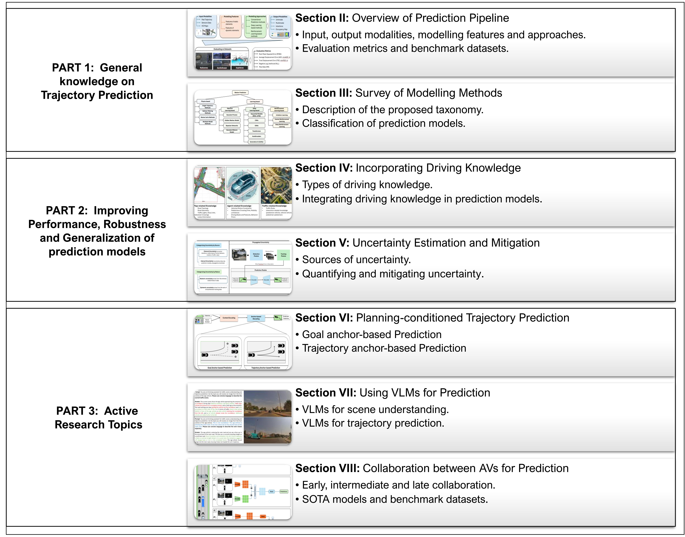

自律走行車が現代の交通システムに大規模に統合される可能性が高まる中、動的環境での安全なナビゲーションを確保することが円滑な統合に不可欠です。安全性を保証し衝突を防ぐため、自律走行車は周囲の交通エージェントの将来の軌跡を予測できなければなりません。過去10年間、アカデミアと産業界の双方から精確な軌跡予測のソリューション設計に多大な努力が注がれてきました。その結果、膨大な数のアプローチが生まれ、それらがどのように異なるか、どの課題に取り組んでいるか、そして軌跡予測においてどのような限界が残っているかという疑問が生じています。本論文は最近の軌跡予測手法の相当部分をレビューし、既存のソリューションを分類するタクソノミーを提案します。また、入出力モダリティ、モデリング特徴量、性能評価指標、予測パラダイムを含む予測パイプラインの一般概要を提供します。さらに、予測領域における活発な研究トピックについて議論し、残された研究課題とチャレンジを示します。
自律走行の時代は、現代の交通システムに革命をもたらそうとしています。Tesla、Waymo、Cruiseなどの自動車会社は今日の自動運転技術のパイオニアです。これらの企業が開発した実践的・革新的なソリューションと学術研究が相まって、自律走行向けの知覚・予測・計画・制御アルゴリズムが急速に進歩しています。
周囲の交通参加者の将来の軌跡を予測することは、安全なナビゲーションに不可欠であり、自律スタックの予測モジュールの中心的なタスクです。予測された軌跡は計画アルゴリズムへの入力として渡され、潜在的な衝突につながる経路を排除して安全な行動方針を選択するために使われます。
交通シナリオの多様性、道路レイアウト、交通参加者間のインタラクション、様々なマニューバ、人間の行動の固有のランダム性、そして計算時間の要件から、軌跡予測問題はさまざまな課題を呈しています。
自律走行車（AV）は異種交通環境で動作し、予測モジュールは車両・自転車・歩行者・バイクを含むすべての交通参加者の運動ダイナミクスを考慮しなければなりません。車両の動きは過去の動きや道路トポロジー、物理的制約だけでなく、近くのエージェントの行動にも影響を受けます。人間のドライバーはこのような相互依存を直感的に理解しますが、AVも同様のインタラクション認識メカニズムを備える必要があります。
歩行者の軌跡予測では、インタラクションと相互依存の複雑さに加え、複雑な人間行動を考慮する必要があります。歩行者の動きは過去の軌跡、道路トポロジー、周囲エージェントの行動だけでなく、社会規範、目的地の意図、固有の行動ランダム性（例：スマートフォンを確認するために突然立ち止まる、知人に挨拶するために方向転換するなど）にも影響を受けます。
さらに、交通規則を組み込んだ予測モデルは制約に準拠したもっともな将来軌跡の集合を絞り込める利点がありますが、人間ドライバーは速度超過、実線越えの車線変更、信号無視など規則を違反する場合があります。予測モデルは頑健で信頼性の高いリアルワールド展開を確保するため、このような違反の可能性も考慮する必要があります。
最後に、軌跡予測は本質的にマルチモーダルです。同じ過去の軌跡が複数のもっともな将来につながる可能性があります。例えば、直進と左折の両方が示された車線で交差点に近づく車両は、直進または左折する可能性があります。理想的には、予測モデルはこのマルチモーダル性を捉え、下流の計画モジュールに容易に統合できる形式の出力を生成すべきです。
本節では軌跡予測領域に関連する主要なサーベイ論文をレビューします。各論文を簡潔に説明し、主要な焦点を強調します。
Liu et al. は軌跡予測のための学習ベース手法をレビューし、表現・モデリング・学習の観点を考慮しています。Teeti et al. はビジョンベースの意図・軌跡予測アプローチに焦点を当て、リアルタイム推論と自己教師あり解の不足を展望として概説しています。Leon and Gavrilescu はトラッキングと動作予測の手法を調査し、物理的・交通規則的制約に基づくシステムを主張しています。
Mozaffari et al. はディープラーニングベースの予測手法を入力表現・予測手法・出力タイプで分類しています。Huang et al. は予測手法、文脈的要因のモデリング、生成出力に基づいて分類し、物理・道路・インタラクション関連の要因を区別しています。Ding and Zhao は運転知識の組み込みに焦点を当てたDLベースモデルをレビューしています。
歩行者軌跡予測に関しては、Rudenko et al. が予測手法と文脈的手がかりに基づく分類を提案しています。Sighencea et al. はセンサータイプとDLベースアプローチに焦点を当て、Korbmacher and Tordeux は知識ベースアプローチとDLベース手法を比較しています。
本レビューのスコープは、軌跡予測分野の包括的な概観を初心者研究者に提供し、経験豊富な実務者には活発なトピックの議論を提供することです。
本節では予測パイプラインの包括的な概要を提供します。予測パイプラインは問題定式化から始まり、入力モダリティ、モデリング特徴量とアプローチ、出力モダリティ、評価指標、ベンチマークデータセット、予測パラダイムへと続きます。
交通シナリオは自車evとエージェントの集合A = {a₁, a₂, ..., aₙ}によって特徴付けられます。各エージェントaᵢは状態ベクトルτᵢ ∈ ℝ^(t×m)によって定義され、tは観測長、mは任意の次元（最小形式ではm=2）です。
予測タスクは、過去の状態が与えられた際に各交通エージェントaᵢの軌跡シーケンスζᵢ^(t+1:t+Δt)を指定された時間ホライズンΔtで推定することです。
予測器𝒫は単一パラメータ（過去軌跡𝒯）の関数として定式化でき、道路幾何特徴量Gやインタラクションモデリング特徴量Iなどの追加入力が利用可能な場合は複数パラメータに拡張できます。
軌跡の座標は局所座標系またはグローバル座標系で表現できます。また、デカルト座標ではなくフルネ座標（s: 車線中心線に沿った弧長、d: 垂直方向のオフセット）を使用することで、運動パターンをグローバルレイアウトから分離し、道路構造に対する相対的な挙動を学習しやすくなります。
入力モダリティは以下の3グループに分類されます：
各モダリティには固有の制限があり、組み合わせると処理の複雑さが増します。HDマップは高レベルのセマンティクスで予測を豊かにしますが、精密な自己位置推定とマップの利用可能性への依存をもたらします。
モデリング特徴量は静的と動的なコンポーネントに大別されます。
インタラクションモデリングは、密な交通と交差点でエージェント行動が緊密に結びつく場面で有益です。
モデリングアプローチの選択は、アプリケーション要件、プラットフォーム特性、環境の複雑さに依存します。
軌跡予測の出力は以下のように分類されます：
軌跡予測モデルの評価で最も一般的な設定はオープンループモードで、予測軌跡と地上真実の将来経路を直接比較します。主要指標は以下の通りです：
軌跡予測モデルの評価には多様なテストシナリオが必要です。主要なデータセットを以下に示します：
既存の予測パラダイムには以下の3つがあります：
本節では軌跡予測アプローチの精緻化されたタクソノミーを説明します。モデリング手法に基づいて広範な予測モデルを体系的に分類します。
提案するタクソノミーでは、運動のモデリング方法に基づいて予測手法を分類します：
物理ベース手法は動力学方程式の集合をシミュレートすることで運動予測を達成します。一般的な運動学モデルには以下があります：
カルマンフィルタリング（KF）手法は車両状態をガウス分布としてモデリングすることでこの制限に対処します。拡張カルマンフィルタ（EKF）やアンセンテッドカルマンフィルタ（UKF）などのバリアントが線形・非線形システムの両方で活用されています。
モンテカルロ手法はガウス分布の仮定なしに入力変数からランダムサンプルを生成して状態分布を近似します。
Multiple-Model（MM）手法は、実際の交通では複数の動作モードが存在するため、一連の定義済み運動モデルを考慮することで運動不確実性に対処します。Interacting Multiple Model（IMM）推定器はほぼ線形の計算複雑度を持つハイブリッドフィルタです。
機械学習ベース手法は関数近似器を適合させることで運転データから運動ダイナミクスを学習します。主要な手法には以下が含まれます：
ML手法は確率的推論に基づく解釈可能性と単純な環境での良好な性能を提供しますが、深層学習手法は複雑で動的な設定での優れた性能を発揮します。
深層学習ベース手法は複雑で階層的なパターンを捉える能力を活用して運転データから運動ダイナミクスを学習します。主要なアーキテクチャには以下があります：
強化学習ベース手法は、エージェント行動を高次元の複雑なポリシー最適化問題として解釈することで予測を生成します。主な2つのカテゴリは以下です：
軌跡予測フレームワークへの運転知識の形式化・組み込みは、予測モデルの性能を向上させ説明可能性を改善する傾向があります。予測モデルは注入された運転知識とデータから学習したパターンの組み合わせから恩恵を受けられます。
運転知識は以下の3グループに分類されます：
エージェント関連知識の組み込みでは、加速度・速度などの車両運動学パラメータを活用するIMM手法や、二軸車両の運動学モデルを予測パイプラインに組み込み、旋回半径・加速度・ヘディングを制約するアプローチが存在します。
交通関連知識では、DESIRE が逆最適制御（IOC）ベースのランキングモジュール内の事前定義コスト関数を通じてこの知識を組み込みます。YawLossフレームワークは、車線方向性に沿った車両運動制約を補助損失関数で強制します。
マップ関連知識は最大のクラスで、道路セグメントをベクトル化要素として表現し幾何学的・意味論的情報をエンコードするアプローチ、曲線座標・車線境界・実行可能マニューバを組み込むモデルなどが含まれます。
さまざまな不確実性の原因を考慮し、不確実性を認識した予測モデルを設計することは、アカデミアと産業界の両方で活発な研究分野です。
外部不確実性は環境から生じ、以下を含みます：
内部不確実性は予測システム自体の制限から生じます：
性質上、不確実性は偶発的不確実性（データの固有のランダム性から生じる）と認識論的不確実性（環境の知識不足から生じる、より多くのデータで低減可能）に分類できます。
分布外（OOD）シナリオへのロバスト性向上のため、以下のアプローチが研究されています：
予測不確実性を定量化し下流の意思決定に組み込むことで、より慎重で情報に基づいた計画が可能になります。主なアプローチ：
計画条件付き軌跡予測手法は、エージェントが合理的に行動し将来軌跡が運動計画器によって導かれるという仮定に基づきます。これらの手法は、エージェントが計画された軌跡をたどるか特定の目的地に到達するという概念をモデリングすることで、単に過去の軌跡・文脈的・インタラクション特徴量だけに依存することを超えています。
計画条件付き軌跡予測手法は運動計画と同様に分類できます：
アンカーベース軌跡予測手法は将来軌跡が目標目的地や潜在的経路などの計画目標を条件とすると仮定します。アンカーには2種類があります：
計画条件付き軌跡予測は運動計画の概念を予測に統合します。将来の課題として、モデルベースと学習ベースのアプローチの組み合わせ（例：PRIME）、微分可能な制御による安全制約の組み込み、意図モデリングとグラフベース推論によるマルチエージェント計画の探求が挙げられます。
アンカー生成モジュールの設計においては、注意機構やクラスタリングを活用してコンパクトな集合を学習し可能性の低い候補を動的に刈り込む効率的でスケーラブルなスキームの設計が改善の方向性となります。
ビジョン言語モデル（VLM）は、車両とシステムが周囲を深く理解できる有望な技術として注目されています。自律走行の文脈では、VLMは以下の3つに大まかに分類できます：
VLMベースの予測モデルは2つの主要な入力を処理します：視覚データとテキストデータ。画像エンコーダは視覚入力（単一カメラ画像、マルチカメラフィード、LiDARレンジ画像など）から空間的・オブジェクトレベルの特徴量を抽出し、テキストエンコーダは詳細な指示・シーン記述・ナビゲーションコマンドなどの文脈情報を解釈します。
VLMおよびLLMベースの軌跡予測モデルの主要研究：
VLMおよびLLMベースのシーン理解モデルの主要研究：
言語拡張型自律走行データセットとして以下が公開されています：
VLMは、周囲の微妙な解釈と環境的要因に必要な一般知識と文脈的理解を組み込むことで、軌跡予測モデルを向上させる重要な可能性を持っています。
主な課題：
マルチモーダルセンシングの進歩にもかかわらず、各センサーには限定的な範囲やキャリブレーションリスクなどの基本的な制限があります。個々のセンサースイートの限界に達したとき、車両間の協調は複数の視点からの情報を集約することで補完できます。
協調は異なる段階でデータと特徴量を組み合わせることで達成できます：
通信冗長性の緩和は以下の2方向で研究されています：
送信遅延は車両が協調する際のもう一つの課題です。FPSや放送頻度などのパラメータが同じ場合でも遅延は避けられません。SyncNetのような注意機構と時間調整戦略を使って데이터을 統一フレームワークに同期させるフレームワークや、インフラカメラからの時間的一貫性を活用して現在のフレームに合わせた特徴フローを生成する手法が研究されています。
センサースイート・モデルアーキテクチャ・協調コンポーネントの統合の変動から生じる課題に対応するため、統一融合空間を通じた協調を提案する研究があります。これによりセンサースイートや予測モジュールアーキテクチャの変動に対応します。
協調知覚データセットには以下があります：
主要な協調予測モデル：
車両間の協調は個々の知覚システムの主要な限界（センシング範囲の制限、密な交通でのオクルージョン、センサー劣化）を克服するのに役立ちます。
現在の主な課題：
軌跡予測領域は物理ベース手法から深層学習ハイブリッドアーキテクチャへと複数の異なるモデリング段階を経て進化してきました。既存のソリューションは古典的機械学習、再帰型ネットワーク、生成モデル、グラフベースアーキテクチャ、注意機構、ハイブリッド手法に及びます。
現在のSOTAモデルは軌跡予測の固有の複雑さを処理するために複数のアーキテクチャを統合するケースが多く（例：シーン理解のCNN、特徴重み付けの注意機構、軌跡生成のエンコーダ-デコーダ構造）、物理ベースモデリングとDLを融合するハイブリッドアプローチも増えています。
多岐にわたる手法と改善されたソリューションにもかかわらず、予測精度の向上率は低下しているようです。Waymo Motion Forecastingデータセットのリーダーボードでは、上位2解の間のminADEの差はわずか0.01（MTR_v3: 0.55 vs. ModeSeq: 0.56）です。
展開準備の観点から以下のギャップが残っています：
最近の研究トレンドは予測モデルのロバスト性と汎化の向上に焦点を当てています：
残存する研究ギャップと将来の研究方向：
本研究では、自律走行のための軌跡予測アプローチの詳細なレビューを行い、既存の手法を分類するための包括的なタクソノミーを提供しました。このタクソノミーは学習ベースと非学習手法を区別し、学習ベース技術はさらに機械学習・深層学習・強化学習アプローチに分類されます。
タクソノミーと評価を超えて、本研究ではこの分野の緊急の課題と進化するトレンドについて議論しました。ロバスト性と汎化に関するセクションでは不確実性の定量化と緩和の必要性を強調し、協調知覚はオクルージョン・センサーノイズ・制限されたセンシング能力などの個々の知覚の制限に対処する有望なソリューションとして議論されました。
計画条件付き軌跡予測は合理的なエージェント行動をモデリングするための運動計画原理を組み込み、ゴールアンカーベース予測などの手法は潜在的な目的地を推定し解釈可能でゴール志向の出力を確保する重要な役割を果たします。予測パイプラインへのVLMの統合は、不確実な条件での意思決定を強化するための常識知識と文脈的理解を提供するエキサイティングな最前線を提供します。
過去20年間で大きな進歩があったにもかかわらず、軌跡予測は依然として開かれた難しい研究分野です。初期の物理ベースモデルからGraph Transformerへの進化があり、ドメイン知識とデータ駆動手法を組み合わせる方向への移行は解釈可能性と予測能力のバランスを取るための前進を表しています。